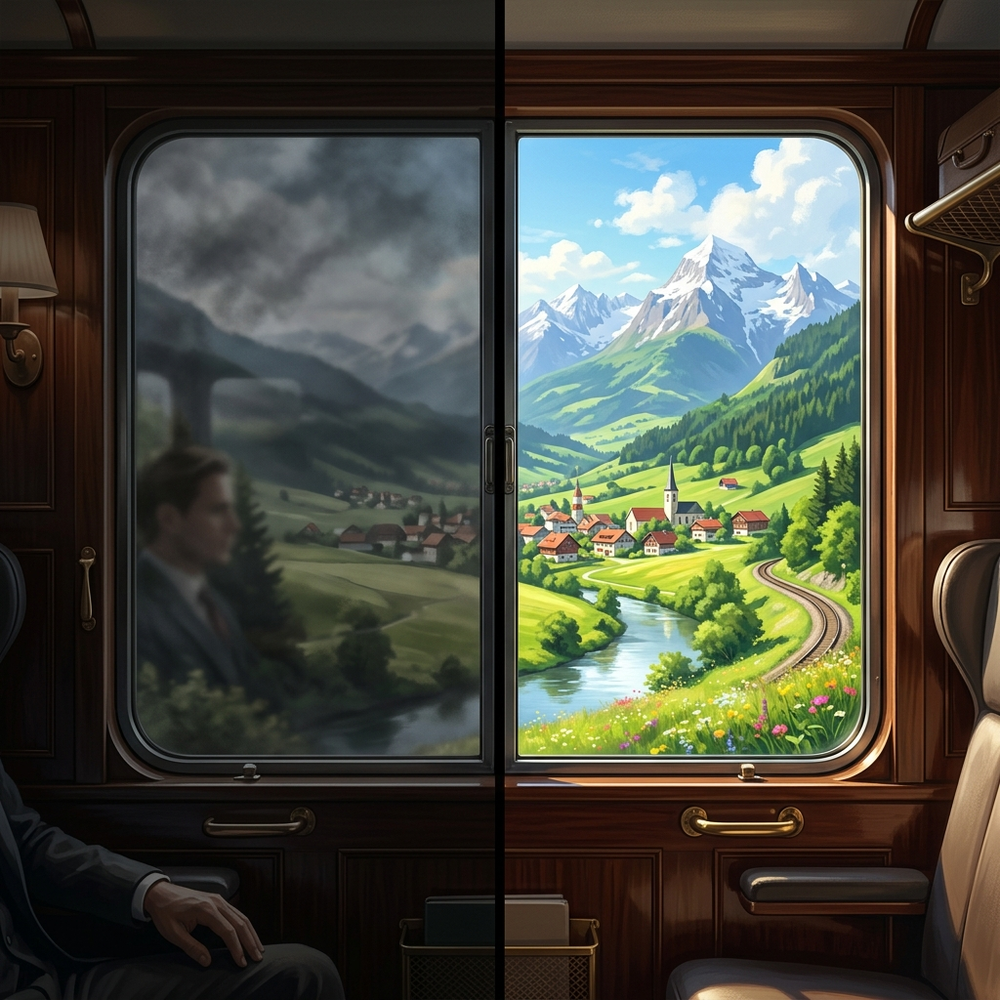

Prazer, eu sou o Rafa. Eu era engenheiro e passei um ano inteiro sem sentir nada.
Eu tinha tudo que diziam que eu precisava para ser feliz. Bom emprego. Bom salário. Família presente.
E acordava todo dia cansado. Voltava para casa exausto. Alguma coisa dentro de mim tinha desligado.
No fim de um ano, esgotado, eu fiz o que todo mundo recomenda. Viajei para o Ceará para descansar. Deu pior.
Em cada praia eu não conseguia relaxar. Não sabia se ia para o mar, se lia um livro, se pedia uma comida.
Eu estava praticamente montando uma planilha para otimizar o meu relaxamento.
Num dos últimos dias, num restaurante à beira mar, um surfista sentado ao meu lado recebeu o prato dele, juntou as mãos e agradeceu. Achei aquilo tão bonito que resolvi imitar. Pedi um peixe.
Quando chegou, olhei em volta para ver se ninguém estava me olhando, juntei as mãos e fechei os olhos.
E não consegui.
Minha cabeça não silenciava. Eu não sabia dizer se sentia raiva, medo ou alegria. Nada estava claro. Eu comecei a chorar ali, na mesa.
Foi ali que eu entendi uma coisa: de tanto querer entender de máquina, eu tinha virado uma.
Estudando filosofia depois disso, eu achei o nome do que estava acontecendo comigo.
Chama vida administrada.
A nossa vida é movida por duas forças: o dever e o querer. O querer é o combustível. O dever é a segurança.
Quando somos jovens, o querer manda. Com o tempo vêm as responsabilidades e a balança vira.
Até que um dia o dever deixa de ser ferramenta e vira o seu único jeito de viver.
Aí você para de habitar a vida. Só administra ela.
O TESTE DE UMA PALAVRA SÓ
Antes você dizia: eu quero conhecer aquele lugar. Eu quero cuidar de mim. Eu quero começar aquele projeto.
Hoje você diz: eu tenho que me exercitar. Eu tenho que descansar. Eu tenho que ver aquela pessoa.
Quando o "eu quero" some e sobra só o "eu tenho", até o seu descanso virou obrigação.
E o que é obrigação cansa. Sempre.
E se você trocar só o lado de fora, não muda nada.
É como viajar de trem com uma película escura na janela. A paisagem lá fora continua linda. O que ficou sem cor foi o que chega até os seus olhos.
Você pode mudar de emprego, de cidade e de rotina. Se levar a mesma película junto, todo lugar novo também vai perder a cor.
